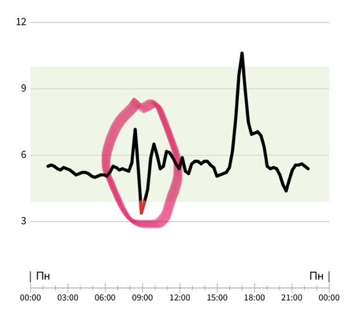

График 1
Кофе натощак.
Мужчина, 68 лет.
Привычная утренняя чашка кофе — и глюкоза резко падает до 3,5 ммоль/л. Для этого клиента кофе запускал стрессовую реакцию организма: сахар уходил вниз, тело реагировало тревогой и компенсаторным голодом. У другого человека тот же кофе может вызвать резкое повышение глюкозы. У одного и того же человека реакция может меняться в зависимости от времени суток и от того, выпит ли кофе натощак или после еды.